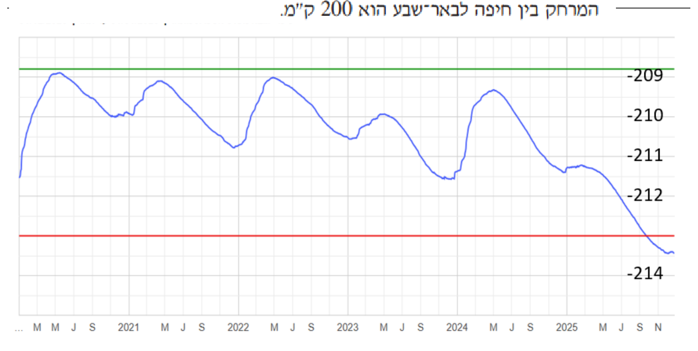

אלגברה לכיתה ח'
4
לפניכם גרף המתאר את מפלס הכנרת מ־2020 עד 2025:

- א.מהו משך הזמן של כל משבצת על הציר האופקי?
- ב.מה היה מפלס הכנרת בתחילת כל אחת מהשנים הבאות?20212022202320242025
- ג.באילו חודשים ושנים היה מפלס הכנרת −211 מטר?
- ד.מה היה המפלס הגבוה ביותר ומה הנמוך ביותר בשנת 2023?הגבוה ביותר:מ'הנמוך ביותר:מ'
- ה.מהו הגובה של הקו האדום התחתון?מ'
- ו.באיזה חודש ושנה ירד מפלס הכנרת מתחת לקו האדום התחתון?